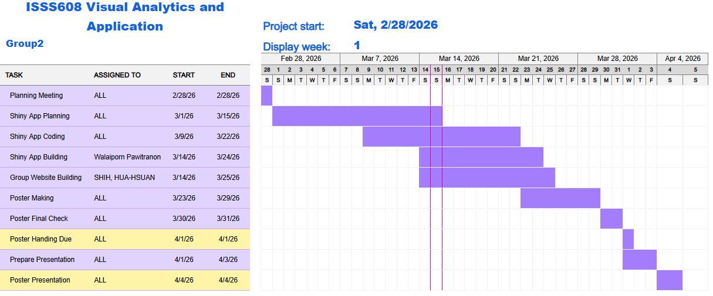

Project Proposal
Motivation
In the highly competitive financial services industry, customer churn has become a critical issue for financial institutions. As the number of alternative financial products and service providers continues to grow, customers face lower switching barriers and more choices in the market. If firms are unable to identify churn risk in a timely manner, they may experience revenue loss and an unstable customer base. Therefore, understanding which factors influence customer churn and which customer groups are more likely to leave is of strong practical importance.
However, identifying churn-related factors alone is not sufficient. From a business perspective, it is even more important to predict high-risk customers in advance and implement suitable retention strategies for different customer segments. For this reason, this study not only aims to explore the key drivers of customer churn, but also seeks to build predictive models that can support early intervention and more targeted customer retention actions.
Through this study, we hope not only to better understand the underlying patterns of customer churn, but also to translate analytical findings into actionable business insights that help financial institutions improve customer retention and overall business performance in a competitive market.
Objectives
This project aims to build an interactive visual analytics prototype to support the analysis of customer behavior and churn in a Latin American fintech platform. The prototype focuses on the following objectives:
Customer overview and exploration: Visualize customer demographics, engagement patterns, transaction activities, and geographical distribution to provide a high-level understanding of the customer base.
Churn-related factor analysis: Explore and statistically validate the relationships between customer attributes and churn groups to identify factors associated with churn risk.
Transaction behavior analysis: Examine transaction count and transaction amount across time periods, customer value segments, and transaction types to uncover usage trends and behavioral differences.
Customer segmentation: Group customers into distinct clusters based on behavioral, transactional, and retention-related features to reveal meaningful customer profiles.
Predictive modeling: Develop Decision Tree and Random Forest models to estimate churn probability, evaluate model performance, and identify key predictors of churn.
Interactive decision-support interface: Provide a user-friendly dashboard that enables users to adjust analysis settings, explore visual outputs, and generate scenario-based predictions. ## Data
Data
This project uses data from the paper A Comprehensive Dataset of Customer Behavior in Latin American Fintech: 12-Month Transactional and Demographic Data for Churn Analysis. The dataset contains customer-level and transaction-level information from a Colombian fintech company over a 12-month period in 2023. It provides a comprehensive view of customer demographics, product usage, transaction activities, customer feedback, digital engagement, and churn-related measures.
The data are organised into two relational CSV files. The first file, customer_data.csv, contains one row per customer and includes demographic information, product portfolio, satisfaction indicators, engagement metrics, and derived customer-level measures. This file consists of 48,723 customer records. The second file, transactions_data.csv, contains one row per transaction and records detailed transaction activities for the same customer base, with a total of 3,159,157 transaction records.
Together, these two files support multiple types of analysis in the project, including exploratory analysis, confirmatory analysis, customer segmentation, and predictive modelling. Since different analytical modules require different variable selections, transformations, and levels of aggregation, data preparation will be conducted separately within each analytical framework.
Methodology and Analytical Approach
This project adopts a combination of Exploratory Data Analysis (EDA), Confirmatory Data Analysis (CDA), Cluster Analysis, and Predictive Modelling to investigate customer behavior and churn patterns in a Latin American fintech platform. Before conducting the analyses, the datasets will be cleaned, transformed, and prepared according to the requirements of each analytical module.
1. Exploratory Data Analysis (EDA)
EDA will be used to provide an overview of customer profiles, transaction patterns, digital engagement, customer experience, and geographical distribution. Through descriptive statistics and visualizations, this module helps users identify trends, distributions, and possible relationships among key variables.
2. Confirmatory Data Analysis (CDA)
CDA will be conducted to statistically examine the relationships between churn groups and selected customer attributes. By applying parametric and non-parametric methods, this module allows users to assess whether the observed differences are statistically significant and to validate churn-related patterns identified in the exploratory stage.
3. Cluster Analysis
Cluster analysis will be applied to identify meaningful customer segments based on behavioral, transactional, and retention-related variables. After transforming and standardizing the selected features, clustering techniques will be used to group customers into distinct segments. The resulting clusters will be interpreted through cluster maps, profile comparisons, and summary tables.
4. Predictive Modelling
Predictive modelling will be used to estimate customer churn probability. In this project, both a Decision Tree regression model and a Random Forest regression model will be developed. Their performance will be evaluated using RMSE, MAE, and R-squared, while visual outputs such as predicted-versus-actual plots and feature importance charts will help users interpret the modelling results.
Data Visualization Method
Detailed information is provided in the prototype pages of each analytical method. A brief summary is presented below.
EDA & CDA: Uses bar charts, line charts, scatter plots, boxplots, heatmaps, correlation plots, and choropleth maps to present customer profiles, transaction patterns, engagement behavior, customer experience, and the relationships between selected variables and churn groups.
Cluster Analysis: Uses elbow plots and silhouette plots to assess the number of clusters, a PCA cluster map to show cluster separation, and heatmaps and summary tables to present the characteristics of each customer segment.
Predictive Modelling: Uses a decision tree diagram to show the model structure, predicted-versus-actual plots to evaluate model performance, and feature importance charts to highlight the most influential predictors. Model performance is summarised using RMSE, MAE, and R-squared.
R Packages
The R packages used in this project include:
| Package | Description |
|---|---|
pacman |
For managing package installation and loading. |
tidyverse |
For data wrangling and visualisation. |
dplyr |
For data transformation and summarisation. |
tidyr |
For reshaping and tidying datasets. |
ggplot2 |
For creating visualisations and statistical graphics. |
readr |
For importing CSV data files. |
readxl |
For reading Excel files when required. |
lubridate |
For processing and transforming date variables. |
scales |
For formatting plot labels, axes, and percentages. |
ggstatsplot |
For generating statistical plots with hypothesis testing results. |
patchwork |
For combining multiple plots into a single layout. |
corrplot |
For visualising correlation matrices. |
sf |
For handling geospatial data. |
tmap |
For producing thematic maps. |
stringi |
For text cleaning and string manipulation. |
factoextra |
For cluster analysis visualisation and diagnostics. |
plotly |
For interactive visualisations. |
cluster |
For clustering techniques and diagnostics. |
DT |
For interactive tabular display. |
shiny |
For building the interactive prototype dashboard. |
rpart |
For Decision Tree modelling. |
rpart.plot |
For Decision Tree visualisation. |
sparkline |
For small-scale inline charts in dashboards and tables. |
visNetwork |
For interactive visualisation of tree or network structures. |
caret |
For model training and evaluation workflows. |
ranger |
For Random Forest modelling. |
Project Schedule
The following project timeline is planned backward from the poster submission deadline to ensure adequate time for development, refinement, and final presentation preparation.
